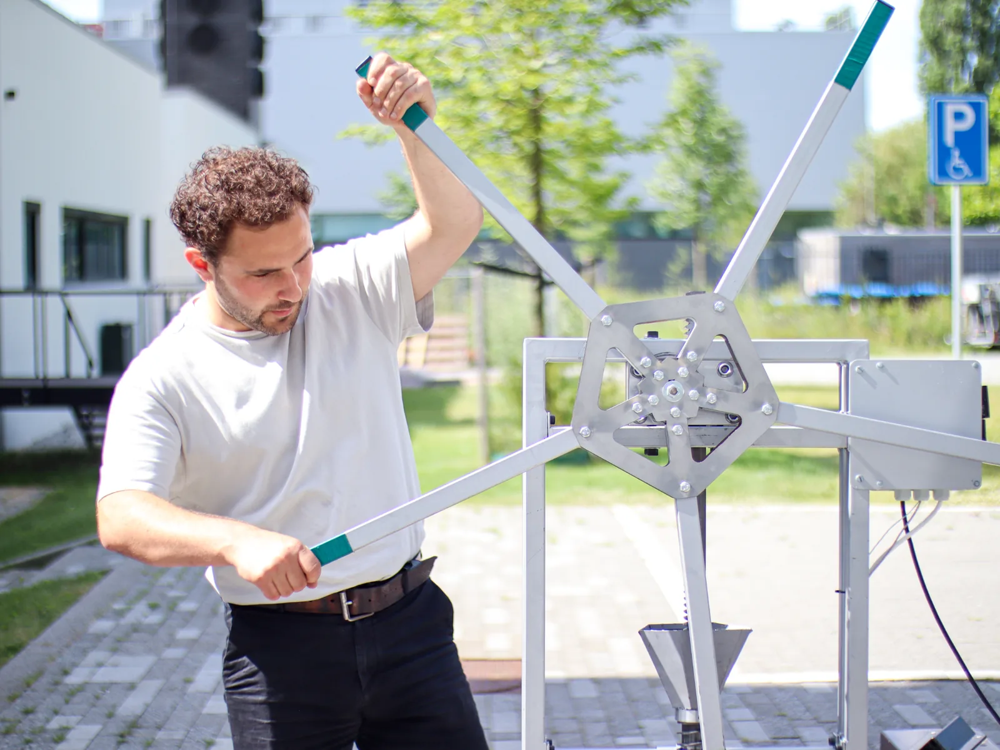
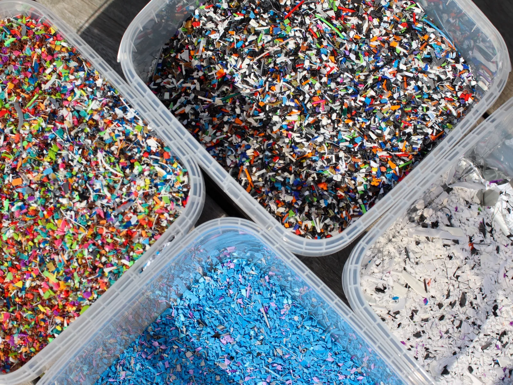

School
Op school
Leerlingen van ongeveer 8–15 jaar ontdekken hoe plastic afval verandert in een nieuw product. Een praktische kennismaking met recycling, techniek en materiaal.
We werken aan een mobiele opstelling waarmee we demonstraties, workshops en productie naar scholen, bedrijven en evenementen kunnen brengen. Zo wordt het recycleproces zichtbaar op de plek waar mensen samenkomen.
Informeer naar de mogelijkheden →
Leerlingen van ongeveer 8–15 jaar ontdekken hoe plastic afval verandert in een nieuw product. Een praktische kennismaking met recycling, techniek en materiaal.
Laat bezoekers van dichtbij zien hoe plastic wordt verwerkt tot iets nieuws. Het recycleproces wordt zichtbaar en tastbaar.
Haal het recycleproces naar je eigen organisatie, bijvoorbeeld tijdens een duurzaamheidsdag, bijeenkomst of teamactiviteit.

Van plastic afval naar flakes en van flakes naar een nieuw product. De mobiele machines maken verschillende stappen van het proces zichtbaar en deelnemers kunnen het maakproces van dichtbij ervaren.